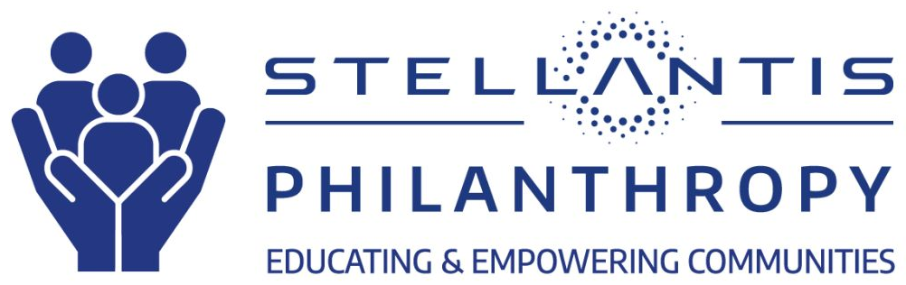
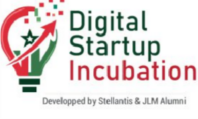

Ton idée mérite de devenir une start-up.
Formation à l'entrepreneuriat digital, création juridique de ta start-up et 6 mois d'incubation avec mentorat et coaching, jusqu'au Demo Day final.
45 hde formation, 11 modules
6 moisd'incubation et coworking
30start-up créées
18–35ans, porteurs d'idées
@@QR@@
Scanne et candidate
Le QR code ouvre directement le formulaire de candidature DSU. Tu peux joindre ton CV.
jlmalumni.com/stellantis

Programme conçu avec le Laboratoire Pluridisciplinaire de Recherche et d'Innovation (LPRI) de l'EMSI · contact@jlmalumni.com